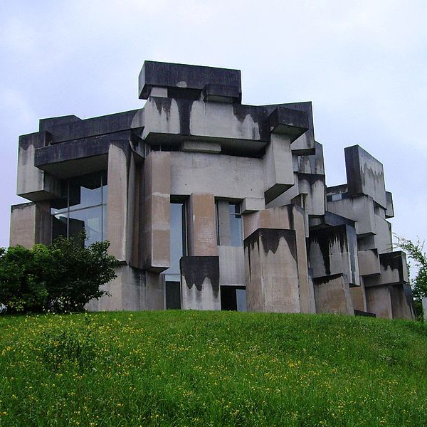

BUFF utilizes CSS blends and filter properties to apply preset filters to elements.
requires:
core/css/buff.css
Blenders allow text or any other element to blend with its background.
NOTE: Apply only one class per element. Combining multple classes together isn't possible (except unblend).
Classes
.lighten-blend
.darken-blend
.hue-blend
.sat-blend (saturation)
.lum-blend (luminosity)
.color-blend
.dodge-blend
.burn-blend
.diff-blend (difference)
.exc-blend (exclusion)
.soft-blend (soft light)
.hard-blend (hard light)
.overlay-blend (inverted hard light)
.multi-blend (darkens element)
.screen-blend (lightens element)
.unblend (removes blend from current element)
In the example below, we use a blue box with white text and apply different blender classes to each.
.color-blend
Color Blend
.diff-blend
Difference Blend
.dodge-blend
Dodge Blend
.multi-blend
Multi-Blend
.exc-blend
Exclusion Blend
.screen-blend
Screen (Standard) Blend
Basic filters apply a single CSS filter property to elements. Use these classes to apply filters directly to any element. Ideal for images.
NOTE: It is NOT possible to apply multiple filter classes to the same element.
Original Image

.invert
.grayscale -d
.sepia -d
.contrast -d / -i
.hue -d / -i
.saturate -d / -i
.darken -d / -i
.lighten -d / -i
.blur -d / -i
Simply append -i or -d to a basic filter class to increase or decrease the affect a filter has on an element.
-i (increases filter affect)
-d (decreases filter affect)
Examples:
.contrast-i (increase contrast)
.hue-d (decrease hue)
NOTE: Not all filter classes support increasing or decreasing a filter. See the list of filter classes above to see what classes support -i and -d.
Apply a filter upon hover simply by adding -h after the class.
Examples:
.invert-h
.darken .hue-i-h
Filters can be applied to backgrounds. Apply any of these classes:
.grayscale-bg
.sepia-bg
.saturate-bg
.hue-bg
.invert-bg
.brighten-bg
.darken-bg
.glassmorph (blur)
EXAMPLE
.GREYSCALE-BG
.SEPIA-BG
.GLASSMORPH
Fancy filters combine multiple filter properties to create a preset filter effect. Filtered elements need to be wrapped within a filter container. An example markup:
<div class="filter filter-name"> <any-elements> </div>
All direct child elements within a fancy filter class container will be affected. The class filter must be applied in conjunction with a filter class (ex: .filter.firestorm).
Original Image